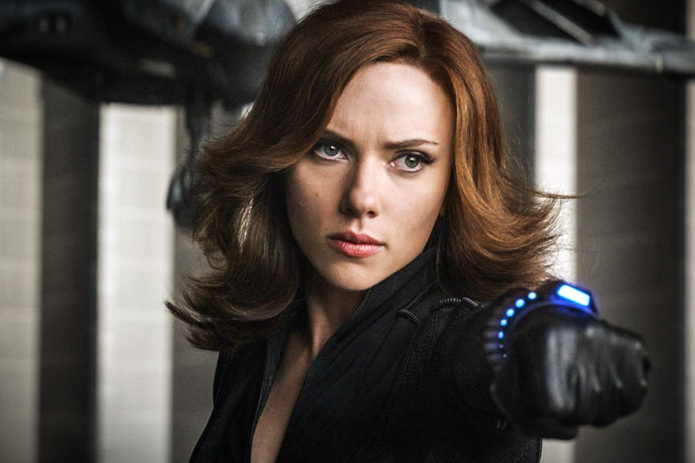

Viúva Negra
Anthony Edward Stark, mais conhecido como Tony Stark, é um personagem fictício e a verdadeira identidade do Homem de Ferro (Iron Man) — interpretado por Robert Downey Jr. Filho de Howard Stark e Maria Stark, ele é um prodígio desde a infância. Ou, como o próprio afirma: “um gênio, bilionário, playboy e filantropo”.
Formou-se em engenharia elétrica e física no MIT (Massachusetts Institute of Technology) quando tinha apenas 15 anos. Aos 21 anos, com a morte de seus pais em um acidente de carro, herdou as Indústrias Stark, um complexo industrial-militar, especializado em armas avançadas, com contratos com o governo americano.
A primeira armadura do Homem de Ferro foi construída quando Tony Stark foi capturado por Wong Chu, durante a guerra do Vietnã (originalmente), que a usou para escapar do cativeiro. Inicialmente, apenas Harold "Happy" Hogan e Virginia "Pepper" Potts sabiam da sua identidade, enquanto o resto do mundo acreditava que o Homem de Ferro era um segurança de Tony.
Seguindo a cronologia do cinema, o Homem de Ferro surgiu em 2008, e Tony Stark teve papéis decisivos em muitos dos filmes seguintes, como em Capitão América: Guerra Civil (2016). No título, é desenvolvido um embate entre o Homem de Ferro e Steve Rogers, o que causa divisão entre os super-heróis. O personagem marca presença nas telas, pela última vez, em Vingadores: Ultimato (2019), e se sacrifica na batalha contra Thanos — o vilão que reuniu as joias do infinito para impor um suposto equilíbrio ao universo.
